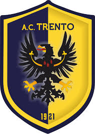

Trento

L'Associazione Calcio Trento 1921 S.r.l., meglio nota come Trento, è una società calcistica italiana con sede nella città di Trento. Milita in Serie C, la terza divisione del campionato italiano.
La sua tradizione sportiva, iniziata nel 1921, è transitata attraverso alcune rifondazioni e ridenominazioni (tra le altre Trento-Caproni e Trentino Calcio).
Dacché le due massime divisioni del campionato italiano di calcio hanno adottato il girone unico, il Trento non è mai riuscito ad accedervi, arrivando al massimo a militare in Serie C1; a livello storico, è comunque per prestigio la prima squadra di calcio della propria provincia e la seconda del Trentino-Alto Adige.